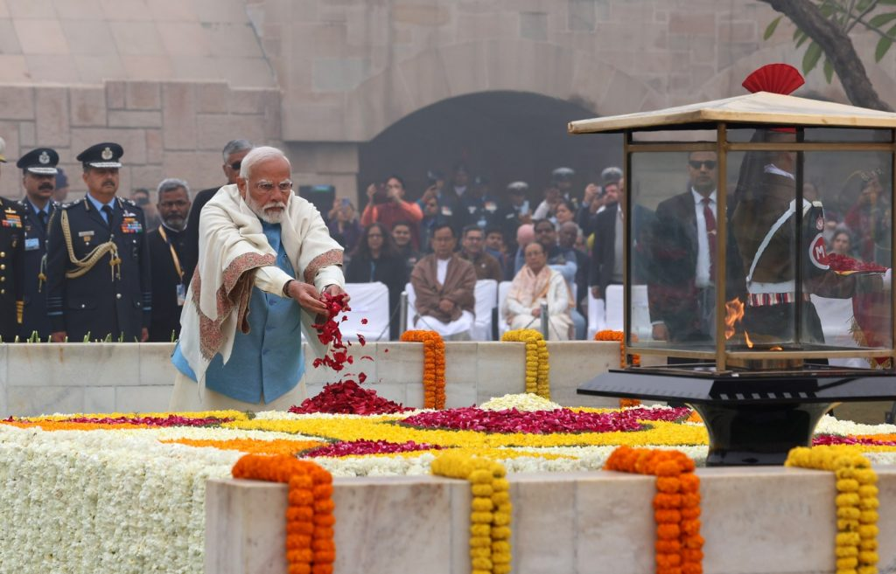

PM मोदी ने बापू को राजघाट पहुंचकर दी श्रद्धाजंलि, लाल बहादुर शास्त्री को भी किया याद

महात्मा गांधी की 157वीं जयंती और पूर्व प्रधानमंत्री लाल बहादुर शास्त्री की 122वीं जयंती के अवसर पर शुक्रवार को देशभर में श्रद्धांजलि कार्यक्रम आयोजित किए गए. दिल्ली में प्रधानमंत्री नरेंद्र मोदी ने महात्मा गांधी को राजघाट पहुंचकर श्रद्धांजलि दी. इसके बाद उन्होंने गांधी समाधि पर आयोजित सर्व-धर्म प्रार्थना में भी हिस्सा लिया. वहीं प्रधानमंत्री ने विजय घाट पहुंचकर पूर्व प्रधानमंत्री लाल बहादुर शास्त्री को भी नमन किया. राजघाट पहुंचे प्रधानमंत्री नरेंद्र मोदी प्रधानमंत्री नरेंद्र मोदी ने महात्मा गांधी की जयंती के अवसर पर राजघाट स्थित गांधी समाधि पहुंचकर श्रद्धांजलि अर्पित की. इसके बाद वह वहां आयोजित सर्व-धर्म प्रार्थना में शामिल हुए. इस दौरान गांधीजी के विचारों और उनके योगदान को याद किया गया. #WATCH | महात्मा गांधी की 157वीं जयंती आज, प्रधानमंत्री मोदी ने बापू को राजघाट पर श्रद्धांजलि दी@thema